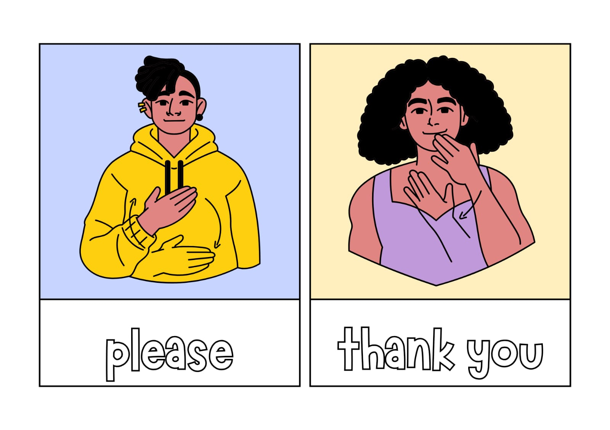
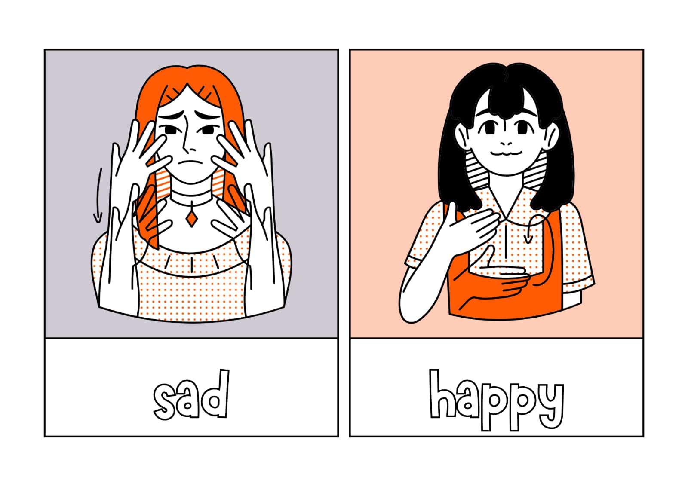
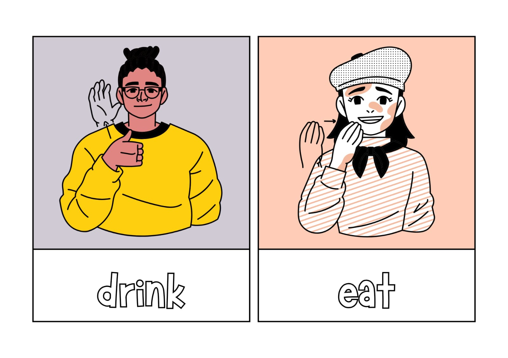
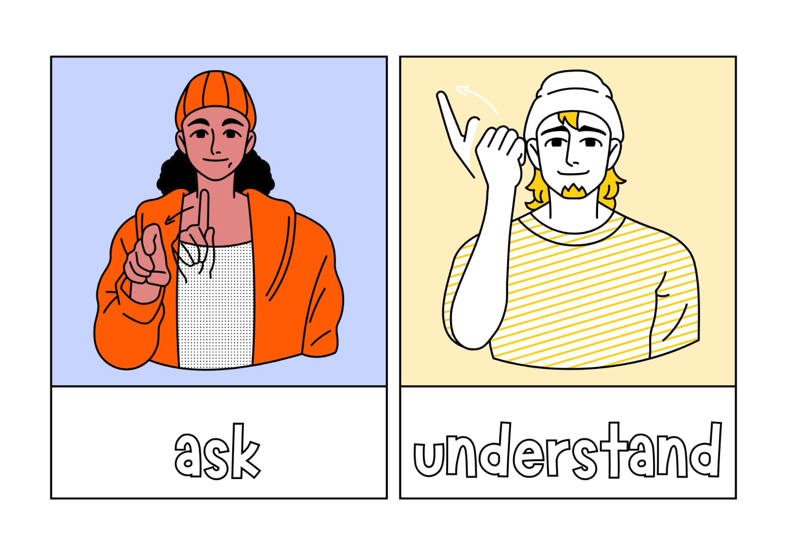

Learn through video lectures
Video lectures offer an effective learning method, combining visual and auditory cues for better understanding. They allow for self-paced learning

Video lectures offer an effective learning method, combining visual and auditory cues for better understanding. They allow for self-paced learning
Uncover the rich history and cultural heritage of Indian Sign Language. Explore its roots in ancient Indian traditions and its evolution into a unique form of communication. Discover the influence of diverse regional dialects on its development.
Sign languages are languages that use the visual-manual modality to convey meaning, instead of spoken words. Sign languages are expressed through manual expression in combination with non-manual markers. Sign languages are full-fledged natural languages with their own grammar and conditions. Sign languages are not universal and are usually not mutually understandable, although there are also similarities among different sign languages.
ISL is primarily used by members of the deaf community in India to communicate with each other and with hearing individuals who have learned the language. It serves as a means of inclusive communication and cultural expression. ISL plays a vital role in education for deaf individuals in India. It is used in schools and colleges to facilitate learning and communication. Additionally, sign language interpreters are employed to facilitate communication between deaf and hearing individuals in various settings.



